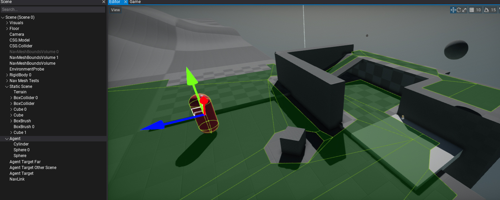
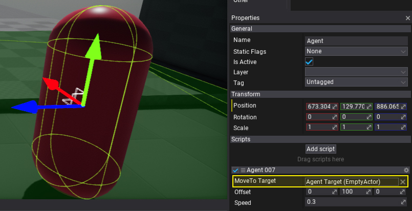

HOWTO: Create path following agent
In this tutorial, you will learn how to implement a simple script that uses pathfinding to move the object thought the scene to the destination location.
1. Setup a scene
Firstly you will need to preapre you level, setup the navmesh and the object to move (our agent).

2. Create agent logic script
Create and implement the following script:
public class Agent007 : Script
{
[Tooltip("The target object to follow.")]
public Actor MoveToTarget;
[Tooltip("The offset applied to the actor position on moving it.")]
public Vector3 Offset = new Vector3(0, 100, 0);
public float Speed = 10.0f;
private Vector3 _targetPos;
private Vector3[] _path;
private float _pathLength;
private float _pathPosition;
public override void OnUpdate()
{
if (!MoveToTarget)
{
Debug.LogError("No target to move.");
return;
}
var currentPos = Actor.Position;
var targetPos = MoveToTarget.Position;
// Check if reached target location
if (Vector3.DistanceSquared(currentPos, targetPos) < 2)
return;
// Check if need to build a new path
if (targetPos != _targetPos)
{
_targetPos = targetPos;
_pathPosition = 0;
_pathLength = 0;
if (!Navigation.FindPath(currentPos, targetPos, out _path))
{
Debug.LogError("Failed to find path to the target.");
return;
}
// Move the start/end points to navmesh floor
if (_path.Length != 0)
Navigation.ProjectPoint(_path[0], out _path[0]);
if (_path.Length > 1)
Navigation.ProjectPoint(_path[_path.Length - 1], out _path[_path.Length - 1]);
// Compute path length
for (int i = 0; i < _path.Length - 1; i++)
{
var segmentLength = Vector3.Distance(_path[i], _path[i + 1]);
_pathLength += segmentLength;
}
}
// Skip if has no path
if (_path == null)
return;
// Move
var pathProgress = Mathf.Min(_pathLength * _pathPosition + Time.DeltaTime * Speed, _pathLength);
_pathPosition = pathProgress / _pathLength;
// Calculate position on path
float segmentsSum = 0;
for (int i = 0; i < _path.Length - 1; i++)
{
var segmentLength = Vector3.Distance(_path[i], _path[i + 1]);
if (segmentsSum <= pathProgress && segmentsSum + segmentLength >= pathProgress)
{
float t = (pathProgress - segmentsSum) / segmentLength;
Actor.Position = Vector3.Lerp(_path[i], _path[i + 1], t) + Offset;
break;
}
segmentsSum += segmentLength;
}
}
}
3. Add script to the object and link the Move To Target

4. See the results
Finally, just press Play (or hit F5) and see your bot moving through the scene.